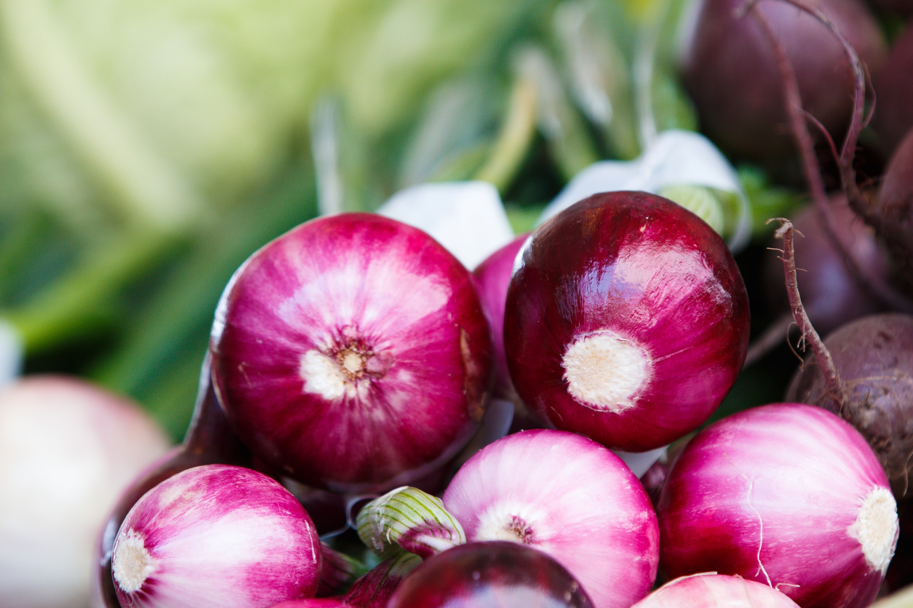
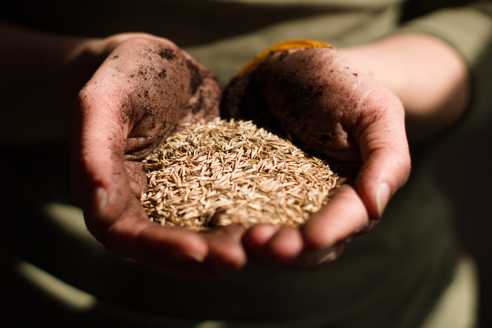
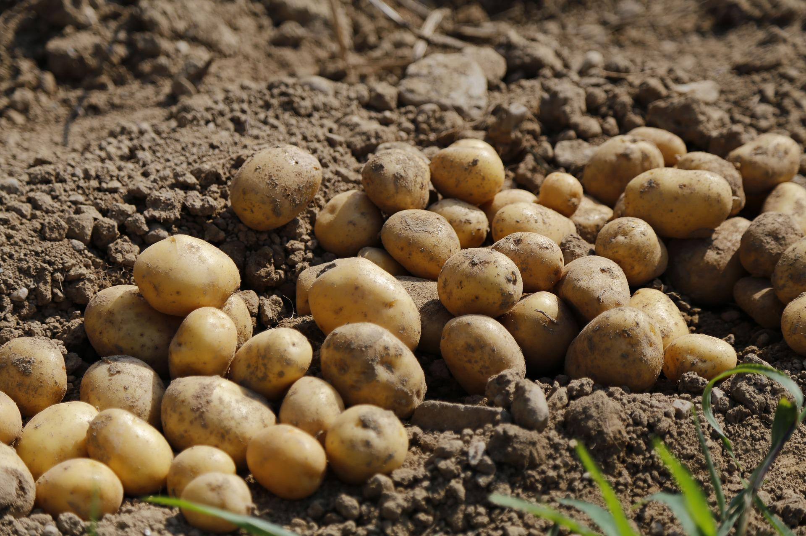

自然と向き合い育てる野菜
長岡農園の農産物には、化学合成農薬・化学肥料は一切使いません。
無農薬、安心して食べられるものを作ることにとことんこだわっています。
子供に食べさせたいか、その基準で考える。
手間がかかりたくさんは作れない。でも信念は曲げない。
それが私たちのこだわりです。


土にこだわる
野菜を作る上で一番大切なのは土作り。
土壌の酸度を調整し、有機物を入れて「ふかふかの土」を作る。
私たちはこの土作りにこだわり、栄養バランスの良い土で育てる。それが野菜たちがゆっくりたっぷり栄養を吸収して育つ秘訣だと思っています。
なるべく自然に近いかたちで育てる
自然は手を加えずともすくすく育っていく。
私たちの農園もそのような状態にできないだろうか？
そう疑問を持った一代目長岡は、人為的な作業を極力減らし自然の力を大きく借りて育てる「自然農法」にたどり着きました。
その考え・手法は現在の園主、二代目長岡にも受け継がれ、新潟の大地の恵みを存分に取り入れた農作物をお届けしています。